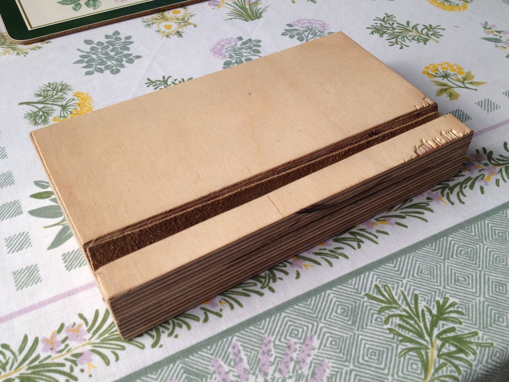
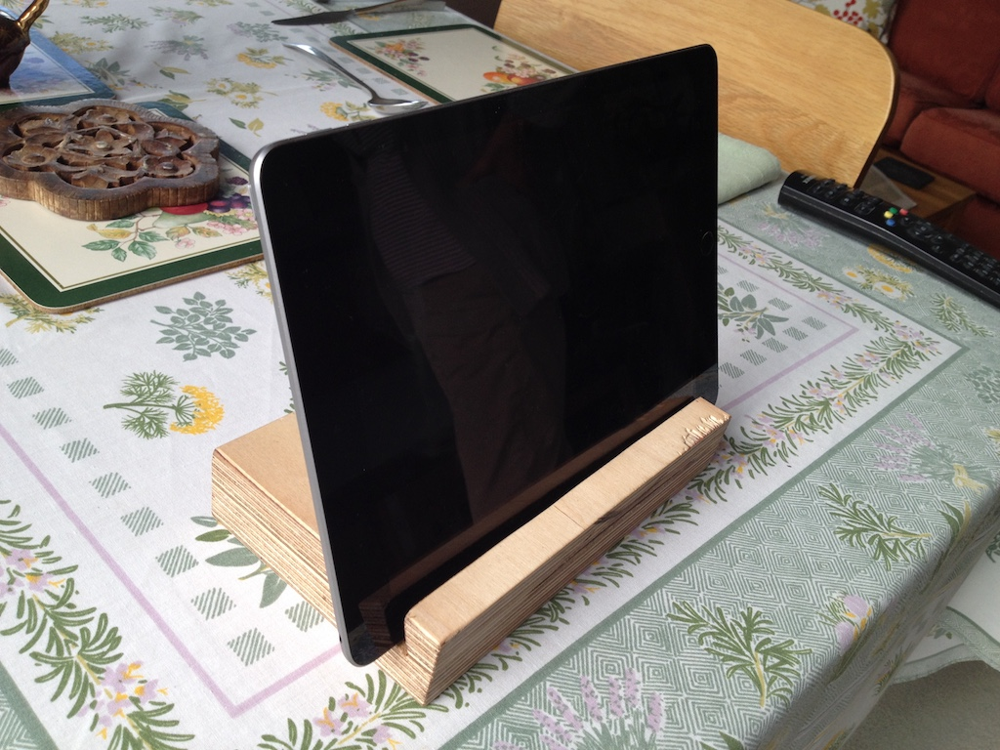
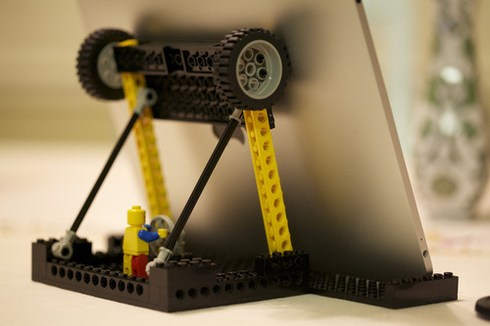

Standing Around
Sometimes, when we talk to you at the weekend, we use our iPad. I balance the iPad on my knee, but Grandma complains that I wobble it around. So I thought that I would make a stand for the iPad from a piece of plywood that was left over from the shelves that I built for our study.
You have probably noticed that wood has a grain. If you cut across a tree trunk you see the annual growth rings, but if you cut the trunk along its length you see the grain, which runs up and down the trunk or branch. This means that wood is stronger in one direction than in the other.
Plywood is made by glueing together thin sheets of wood, with the grain of the second sheet at right angles to that of the first sheet and so on. This makes plywood very strong in all directions.
I cut a strip off the piece of plywood at an angle using my circular saw. Then I glued the two pieces to another piece of plywood, leaving a slot for the iPad. So Grandma and I tried our new iPad stand when we spoke with Rowan. I think that Grandma is happy now.
You could try making your own iPad stand like this.